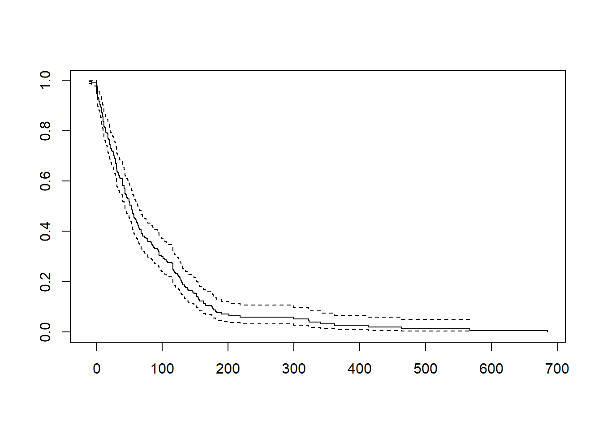

| Characteristic | N = 6701 |
|---|---|
| status_lastfu.factor | |
| Alive | 503 (83%) |
| Dead | 101 (17%) |
| Unknown | 66 |
| 1 n (%) | |
Seizure free period
Overview of the last followup on the seizure patients, we joint two data frame using MR Number.
A two-by-two table is used to compare two variables or categories, showing how they relate. It’s useful for analyzing data, making decisions, and presenting information concisely here we take status of and seizure reported variables.
Seizure reported at diagnosis with followup status
| Characteristic | Yes, N = 2351 | No, N = 4341 |
|---|---|---|
| status_lastfu.factor | ||
| Alive | 190 (88%) | 312 (81%) |
| Dead | 27 (12%) | 74 (19%) |
| Unknown | 18 | 48 |
| 1 n (%) | ||
Seizure free period data set preparation
- Filter data based on the Seizure reported at diagnosis is Yes.
- Last Seizure incidence date.
- If last seizure incidence date is not known then take date of start of AED.
- Last date of follow up if alive if not than taken death date.
- Weekly Duration between last date of follow up and last seizure incidence date.
- Censored if not alive.
| Characteristic | N = 6701 |
|---|---|
| last_seizure_incidence | 2009-01-10 to 2023-08-12 |
| Unknown | 383 |
| date_registration | 2016-01-13 to 2023-08-03 |
| duration | 33 (11, 78) |
| Unknown | 383 |
| status_lastfu.factor | |
| Alive | 503 (83%) |
| Dead | 101 (17%) |
| Unknown | 66 |
| Survival Status at the last followup | |
| 1 | 503 (83%) |
| 2 | 101 (17%) |
| Unknown | 66 |
| 1 Range; Median (IQR); n (%) | |
Last seizure incidence date replaced by start date of AED
- Construct a data frame help of all start date.
- Add a column in this data frame start_date
- This column contain NA values if in a row all the fields are NA.
- join this data frame and seizure data frame by MR number.
- If last date of seizure is NA and start date is present then NA replace by the start date.
| Characteristic | N = 2351 |
|---|---|
| last_seizure_incidence | 2009-01-10 to 2023-08-12 |
| date_registration | 2016-02-22 to 2023-08-02 |
| duration | 40 (14, 93) |
| status_lastfu.factor | |
| Alive | 190 (88%) |
| Dead | 27 (12%) |
| Unknown | 18 |
| Survival Status at the last followup | |
| 1 | 190 (88%) |
| 2 | 27 (12%) |
| Unknown | 18 |
| 1 Range; Median (IQR); n (%) | |
Median seizure free times (weeks)
Methods: Kaplan Meier and Parameter: Median
Call: survfit(formula = Surv(duration, status_lastfu == 1) ~ 1, data = seizure_free_df)
n events median 0.95LCL 0.95UCL
[1,] 217 190 53 43 63
Summary model
Call: survfit(formula = Surv(duration, status_lastfu == 1) ~ 1, data = seizure_free_df)
time n.risk n.event survival std.err lower 95% CI upper 95% CI
-12 217 1 0.99539 0.00460 0.986421 1.0000
-7 216 1 0.99078 0.00649 0.978150 1.0000
0 215 6 0.96313 0.01279 0.938386 0.9885
2 208 7 0.93072 0.01726 0.897503 0.9652
3 201 1 0.92609 0.01778 0.891885 0.9616
4 200 2 0.91683 0.01877 0.880766 0.9544
5 197 3 0.90287 0.02014 0.864240 0.9432
6 194 2 0.89356 0.02098 0.853367 0.9356
7 191 1 0.88888 0.02139 0.847935 0.9318
8 188 4 0.86997 0.02293 0.826171 0.9161
9 184 3 0.85578 0.02397 0.810066 0.9041
10 181 4 0.83687 0.02524 0.788839 0.8878
11 177 4 0.81796 0.02638 0.767855 0.8713
12 171 1 0.81318 0.02666 0.762574 0.8671
13 169 2 0.80355 0.02720 0.751980 0.8587
14 167 2 0.79393 0.02771 0.741439 0.8501
16 163 1 0.78906 0.02796 0.736113 0.8458
17 161 4 0.76945 0.02894 0.714783 0.8283
18 157 1 0.76455 0.02916 0.709480 0.8239
20 155 4 0.74482 0.03003 0.688226 0.8061
21 151 3 0.73003 0.03063 0.672399 0.7926
23 147 2 0.72009 0.03101 0.661818 0.7835
24 145 1 0.71513 0.03119 0.656542 0.7789
26 143 3 0.70012 0.03171 0.640649 0.7651
27 139 2 0.69005 0.03205 0.630015 0.7558
29 135 4 0.66960 0.03269 0.608510 0.7368
30 131 4 0.64916 0.03325 0.587157 0.7177
31 127 2 0.63894 0.03350 0.576535 0.7081
32 125 1 0.63382 0.03362 0.571238 0.7033
33 124 2 0.62360 0.03385 0.560669 0.6936
35 122 2 0.61338 0.03406 0.550134 0.6839
36 120 1 0.60827 0.03415 0.544880 0.6790
39 118 2 0.59796 0.03434 0.534296 0.6692
40 115 3 0.58236 0.03461 0.518329 0.6543
42 111 2 0.57187 0.03477 0.507620 0.6442
43 109 4 0.55088 0.03504 0.486307 0.6240
44 105 1 0.54563 0.03510 0.481000 0.6190
46 104 2 0.53514 0.03520 0.470412 0.6088
47 102 1 0.52989 0.03524 0.465131 0.6037
49 101 2 0.51940 0.03532 0.454593 0.5934
50 99 1 0.51415 0.03535 0.449337 0.5883
51 98 2 0.50366 0.03540 0.438850 0.5780
53 96 3 0.48792 0.03544 0.423181 0.5626
54 93 1 0.48268 0.03544 0.417975 0.5574
55 92 2 0.47218 0.03544 0.407587 0.5470
56 89 1 0.46688 0.03544 0.402340 0.5418
57 88 2 0.45627 0.03542 0.391871 0.5312
58 86 1 0.45096 0.03540 0.386650 0.5260
59 85 1 0.44566 0.03538 0.381437 0.5207
60 84 1 0.44035 0.03535 0.376234 0.5154
61 83 1 0.43504 0.03532 0.371038 0.5101
62 82 1 0.42974 0.03529 0.365852 0.5048
63 81 1 0.42443 0.03525 0.360674 0.4995
64 80 2 0.41382 0.03516 0.350345 0.4888
66 77 1 0.40845 0.03511 0.345118 0.4834
68 76 3 0.39233 0.03494 0.329494 0.4671
70 72 2 0.38143 0.03481 0.318962 0.4561
73 69 1 0.37590 0.03474 0.313625 0.4505
75 68 1 0.37037 0.03466 0.308299 0.4449
78 67 2 0.35932 0.03450 0.297680 0.4337
83 65 1 0.35379 0.03441 0.292387 0.4281
84 64 1 0.34826 0.03431 0.287104 0.4224
85 63 1 0.34273 0.03421 0.281833 0.4168
86 62 1 0.33720 0.03410 0.276573 0.4111
88 61 1 0.33168 0.03399 0.271325 0.4055
92 60 1 0.32615 0.03387 0.266088 0.3998
94 59 1 0.32062 0.03374 0.260862 0.3941
95 58 3 0.30404 0.03333 0.245256 0.3769
99 55 1 0.29851 0.03318 0.240078 0.3712
101 54 1 0.29298 0.03302 0.234912 0.3654
104 53 1 0.28745 0.03286 0.229759 0.3596
106 52 1 0.28192 0.03269 0.224619 0.3539
108 51 1 0.27640 0.03251 0.219491 0.3481
115 50 1 0.27087 0.03233 0.214376 0.3422
116 49 4 0.24876 0.03152 0.194052 0.3189
117 45 1 0.24323 0.03130 0.189005 0.3130
118 44 1 0.23770 0.03107 0.183974 0.3071
120 43 1 0.23217 0.03084 0.178957 0.3012
123 42 1 0.22665 0.03060 0.173955 0.2953
125 41 1 0.22112 0.03035 0.168969 0.2894
126 39 1 0.21545 0.03009 0.163852 0.2833
127 38 1 0.20978 0.02983 0.158753 0.2772
128 37 1 0.20411 0.02956 0.153672 0.2711
129 36 1 0.19844 0.02928 0.148611 0.2650
130 35 1 0.19277 0.02898 0.143569 0.2588
131 34 1 0.18710 0.02868 0.138547 0.2527
134 33 1 0.18143 0.02837 0.133546 0.2465
135 32 1 0.17576 0.02804 0.128566 0.2403
138 31 1 0.17009 0.02770 0.123608 0.2341
139 30 1 0.16442 0.02735 0.118673 0.2278
145 29 1 0.15875 0.02699 0.113761 0.2215
148 28 1 0.15308 0.02662 0.108874 0.2152
152 26 2 0.14131 0.02584 0.098745 0.2022
154 24 1 0.13542 0.02542 0.093728 0.1957
155 23 1 0.12953 0.02499 0.088746 0.1891
156 22 1 0.12364 0.02454 0.083798 0.1824
162 21 2 0.11187 0.02357 0.074019 0.1691
166 19 1 0.10598 0.02305 0.069191 0.1623
175 18 1 0.10009 0.02251 0.064408 0.1555
176 17 1 0.09420 0.02195 0.059673 0.1487
177 16 1 0.08832 0.02135 0.054989 0.1418
181 15 1 0.08243 0.02072 0.050361 0.1349
183 14 1 0.07654 0.02006 0.045793 0.1279
190 13 1 0.07065 0.01936 0.041292 0.1209
201 12 1 0.06477 0.01862 0.036863 0.1138
218 11 1 0.05888 0.01784 0.032516 0.1066
299 9 1 0.05234 0.01701 0.027677 0.0990
322 8 1 0.04579 0.01609 0.022996 0.0912
323 7 1 0.03925 0.01507 0.018499 0.0833
340 6 1 0.03271 0.01390 0.014219 0.0752
362 5 1 0.02617 0.01257 0.010208 0.0671
413 4 1 0.01963 0.01100 0.006544 0.0589
464 3 1 0.01308 0.00907 0.003362 0.0509
567 2 1 0.00654 0.00648 0.000939 0.0456
685 1 1 0.00000 NaN NA NA